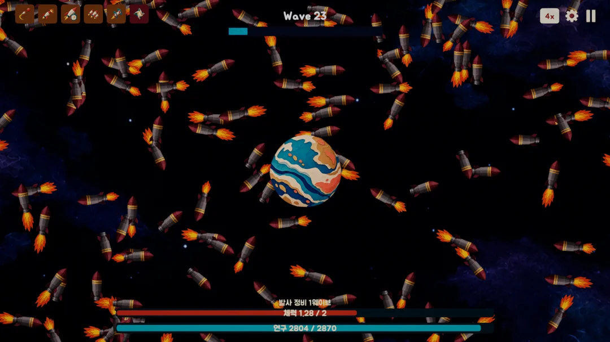
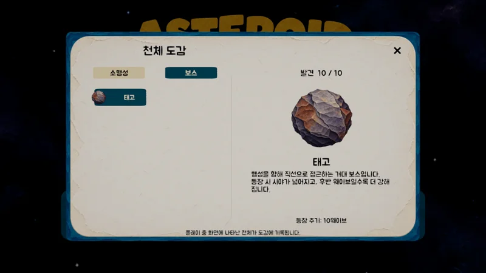

전투 · 적 생성
전투 한가운데서 소행성이 뜸해졌다
플레이 중 적이 드문 순간을 발견했고, 일반 웨이브 도중이라고 짚었습니다. 조사 범위가 보스전 연출에서 평소 적 생성 순서로 좁혀졌습니다.

비용이 큰 적의 생성 예산 분리
코드를 살펴보니 다음 적 한 종류를 먼저 뽑고, 그 적을 만들 자원이 쌓일 때까지 모든 생성을 기다리는 경로가 있었습니다. 저는 자원이 많이 드는 적의 몫을 따로 모으면서 다른 적은 계속 생성하는 변경에 동의했습니다.
Codex가 생성 로직을 수정하고 10분 분량의 생성 시뮬레이션과 Unity 컴파일을 확인했습니다. 제가 본 순간은 따로 기록하지 않아 실제 플레이에서 공백이 얼마나 줄었는지는 측정하지 못했습니다.
UI · 첫 화면 표시
도감을 처음 열면 게임이 멎었다
웹에서 발견한 멈춤이 에디터에서도 재현됐습니다. 설정창도 처음 열 때 끊긴다는 점을 짚어, 두 메뉴가 첫 표시에 하는 일을 살펴봤습니다.

고정 문구의 글자를 미리 생성
저는 고정 문구의 글자를 미리 준비하고, 빠진 글자만 실행 중 만드는 방식을 선택했습니다. Codex가 이를 적용하고 도감을 열 때 리소스 로딩을 기다리는 코드와 글자 크기를 다시 계산하는 작업도 제거했습니다.
수정 후 Unity Editor의 첫 표시는 도감 약 13ms, 설정창 약 21ms였습니다. 당시 웹 빌드에서는 다시 측정하지 않았습니다.
플레이 데이터 · Unity Analytics
강화 카드가 떴을 때 몇 번이나 골랐을까?
드물게 등장한 카드와 자주 지나친 카드를 구별하려고 후보로 뜬 횟수 대비 선택률을 요청했습니다. 검수 플레이는 집계에서 제외하도록 했습니다.

후보마다 선택·미선택 기록
Codex가 선택 화면에 뜬 후보 각각에 선택 여부를 한 번씩 기록하도록 바꿨습니다. 다시 뽑거나 건너뛰면 해당 후보들을 미선택으로 기록해, Unity Data Explorer에서 카드별 선택률을 볼 수 있게 했습니다.
당시 수집 코드와 보고서 설정을 검수했습니다. 운영 표본이 쌓이기 전이어서 실제 이용자의 선택률은 제시하지 않았습니다.